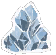
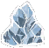

Don’t starve together é a continuação e a versão multiplayer de Don’t Starve ambos criado pela desenvolvedora de jogos eletrônicos “ Klei Entertainment”( ). O jogo foi lançado (em acesso antecipado) em 15 de Dezembro de 2014 e foi oficialmente lançado em 21 de abril de 2016.
). O jogo foi lançado (em acesso antecipado) em 15 de Dezembro de 2014 e foi oficialmente lançado em 21 de abril de 2016.
Embora Don't Starve Together e DS sejam da mesma franquia, eles possuem suas diferenças. DS apresenta as suas atualizações em formas de DLCs ( Shipwrecked,RoG e Hamlet) trazendo grandes mudanças nas mecânicas de jogo e no cenário como por exemplo : Sistema de casa,economia,vulcões,tumbas abandonadas,ilhas tropicais e etc. Enquanto Don't Starve Together também traz mudanças de mecânicas,ele possui um cenário semelhante ao jogo original. Porém com a introdução das novas atualizações,novos biomas e mecânicas vêem se aproximando.

A franquia Don’t Starve não requer que o indivíduo seja necessáriamente habilidoso ou competitivo mas abrange muitas informações que são necessárias para a sobrevivência do jogador: fome(
 , sanidade(
, sanidade( ), temperatura(
), temperatura( ), inimigos(
), inimigos( ) , receitas(
) , receitas( ), validade de comida, escuridão e dentre muitos outros fatores. Essa quantidade de informações podem sobrecarregar um iniciante e geralmente resultando na desistência do jogo. Diferentemente de muitos outros jogos de sobrevivência onde os temas chegam a ser repetitivos ( perdido em uma ilha deserta,avião caiu....) DS possui uma arte única,musica e uma rica historia de jogo, destacando-se de quase todos os jogos do gênero de sobrevivência.
), validade de comida, escuridão e dentre muitos outros fatores. Essa quantidade de informações podem sobrecarregar um iniciante e geralmente resultando na desistência do jogo. Diferentemente de muitos outros jogos de sobrevivência onde os temas chegam a ser repetitivos ( perdido em uma ilha deserta,avião caiu....) DS possui uma arte única,musica e uma rica historia de jogo, destacando-se de quase todos os jogos do gênero de sobrevivência.
A comunidade de Don't Starve Together certamente é grande e há vários guias por ae, entretanto quando comparamos com a comunidade brasileira do jogo os números drasticamente caem. Jogo ele desde o acesso antecipado e desde então me apaixonei pelo jogo. Com certeza deve haver guias mais elaborados do que esse, mas espero que com a minha ajuda você seja capaz de apreciar o jogo apesar da dificuldade dele!
O foco principal desse guia é ensinar os básicos do jogo (receitas
, criação de base simples , sistema de combate do jogo
, sistema de combate do jogo  ) e como lidar contra o inverno () que costuma ser a maior dificuldade entre os novos jogadores. Ainda há MUITO conteúdo a ser descoberto fora desse guia então não estarei estragando toda a surpresa do jogo para você!
) e como lidar contra o inverno () que costuma ser a maior dificuldade entre os novos jogadores. Ainda há MUITO conteúdo a ser descoberto fora desse guia então não estarei estragando toda a surpresa do jogo para você!